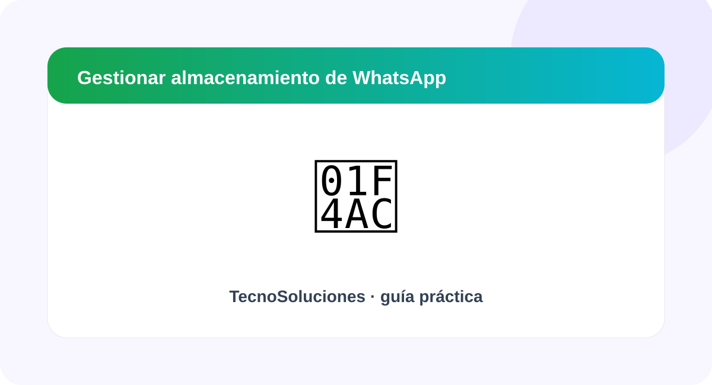

Cómo liberar espacio que ocupa WhatsApp

Encuentra conversaciones y archivos grandes para recuperar almacenamiento sin borrar todo indiscriminadamente.
Abre la administración de almacenamiento
WhatsApp dispone de herramientas para revisar el espacio utilizado por sus archivos.
Identifica archivos grandes
Revisa videos, documentos y otros elementos que ocupan mucho espacio.
Revisa las conversaciones con muchos archivos
Algunos chats acumulan una gran cantidad de multimedia.
Ajusta la descarga automática
Revisa las opciones de descarga automática de multimedia para controlar qué contenido se guarda en el teléfono.
Resumen
Empieza identificando qué está causando el problema y realiza cambios de uno en uno. Así podrás comprobar qué solución funcionó y reducir el riesgo de eliminar información importante.
Fuentes recomendadas: documentación oficial de Google, Microsoft o WhatsApp según el tema. Consulta también Fuentes y referencias.